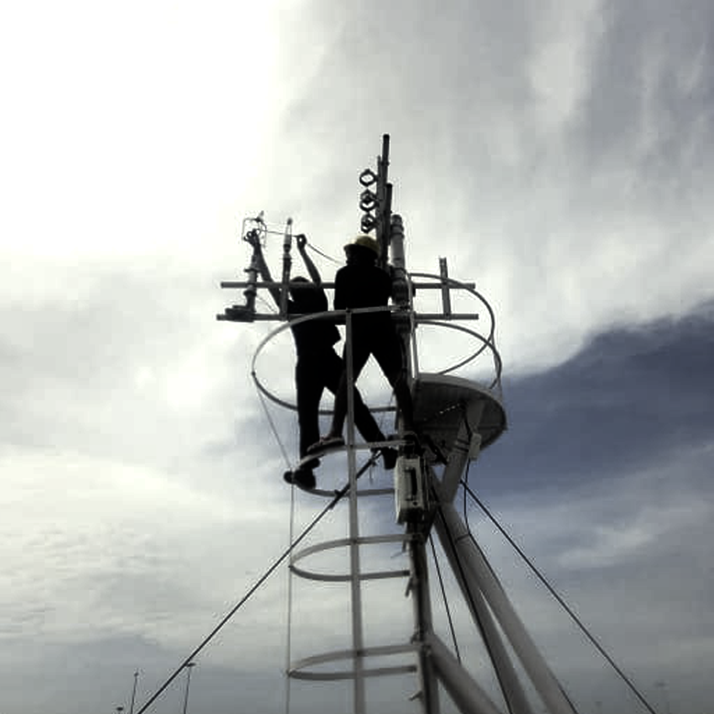
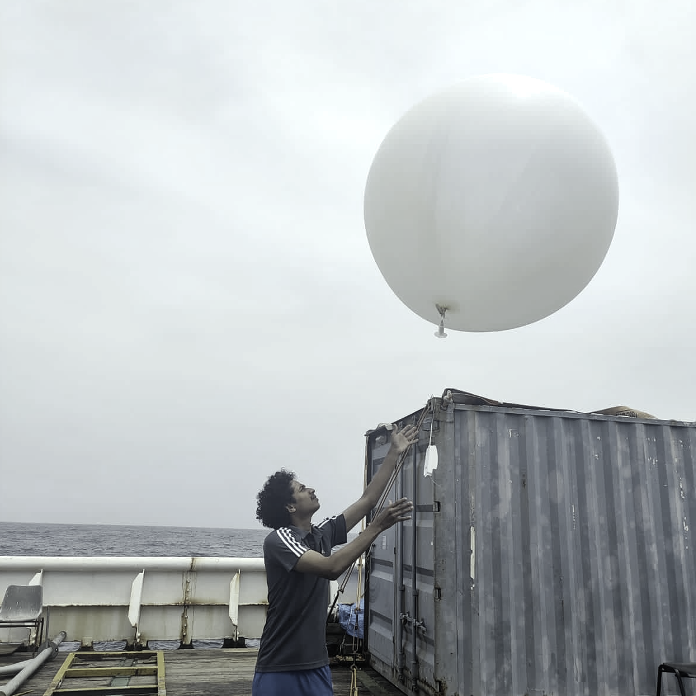
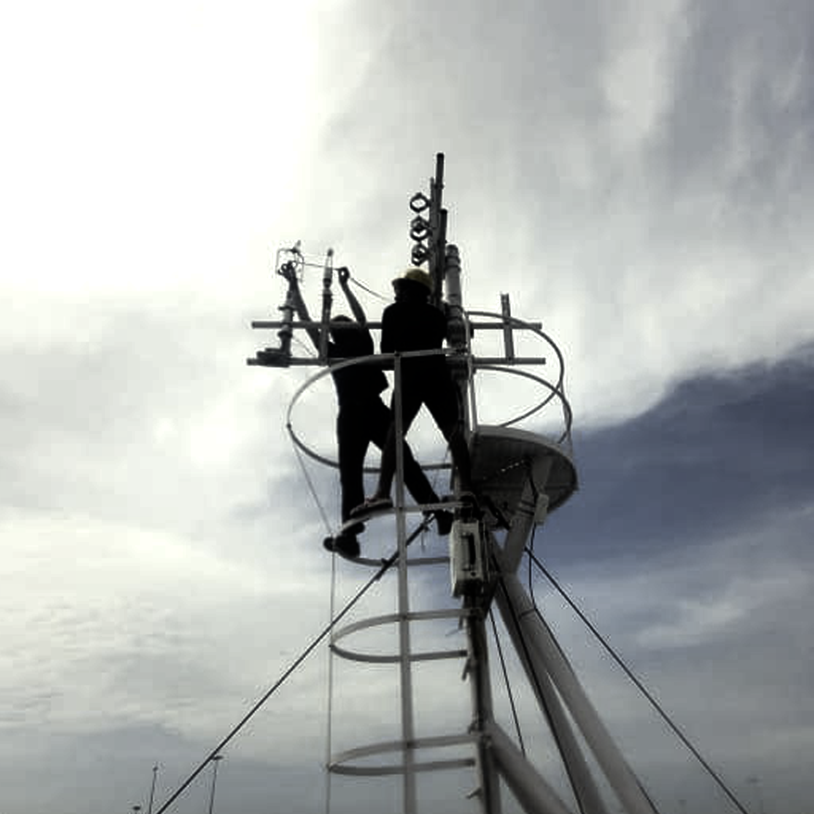
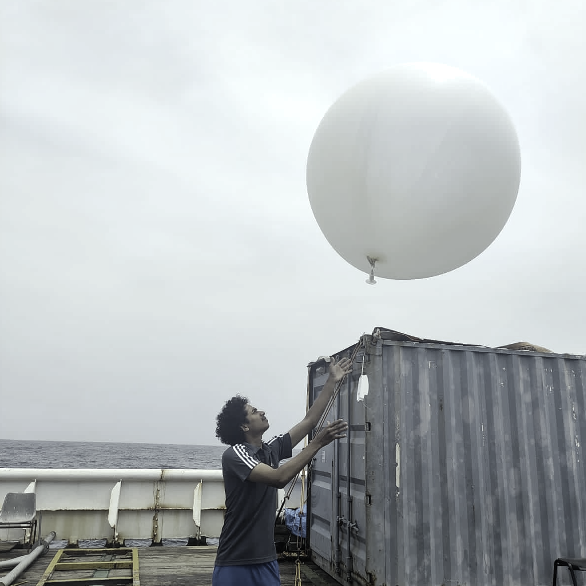

2017-2019
M.Sc. Oceanography, Cochin University of Science and Technology, Kochi, India.
Hello, I'm
Seagoing Physical Oceanographer

Get To Know More
 





4+ years
air-sea interactions, turbulence, eddy covariance

B.Sc. Physics
M.Sc. Oceanography
As an early career oceanographer, I bring four years of dedicated experience and a fervent research interest in air-sea interactions, turbulence dynamics, and the precise estimation of eddy covariance fluxes within marine boundary layers. Currently, engaged in pursuing my Ph.D., in the pursuit of a Ph.D., my focus lies on micrometeorological intricacies across the Bay of Bengal. In my research, I utilize state-of-the-art methodologies like eddy covariance and bulk flux estimations to study momentum flux/wind stress over the ocean. My expertise extends to proficiently utilizing diverse instrumentation for in-situ data acquisition, garnered from over 80 days of sea duty. Engaging in the full spectrum of research activities, from meticulous data collection through to rigorous analysis and subsequent publication, underscores my commitment to advancing our understanding of oceanic processes. Furthermore, I possess adeptness in numerical wave modeling, particularly through WaveWatchIII, further enhancing my capabilities in comprehensive oceanographic research.
Explore My
M.Sc. Oceanography, Cochin University of Science and Technology, Kochi, India.
B.Sc. Physics, University of Calicut, Calicut, India.
Diploma in Computer Applications, Centre for Development of Imaging Technology, Kerala, India.
WaveWatch III
Research Fellow, Indian National Centre for Ocean Information Services (INCOIS), Hyderabad, India
Pursuing PhD “On the micro-meteorological aspects of air-sea flux transfer in the The Indian Ocean” under the guidance of Dr B Praveen Kumar.
Research Fellow, Indian Institute of Tropical Meteorology, Pune, India
Induction Training Program
Master’s dissertation entitled “Mixed Layer Temperature Budget during Northward Propagating Summer Monsoon Intraseasonal Oscillation (MISO) in the Arabian Sea.” under the guidance of Dr Girishkumar M S.
Browse My Recent
Get in Touch